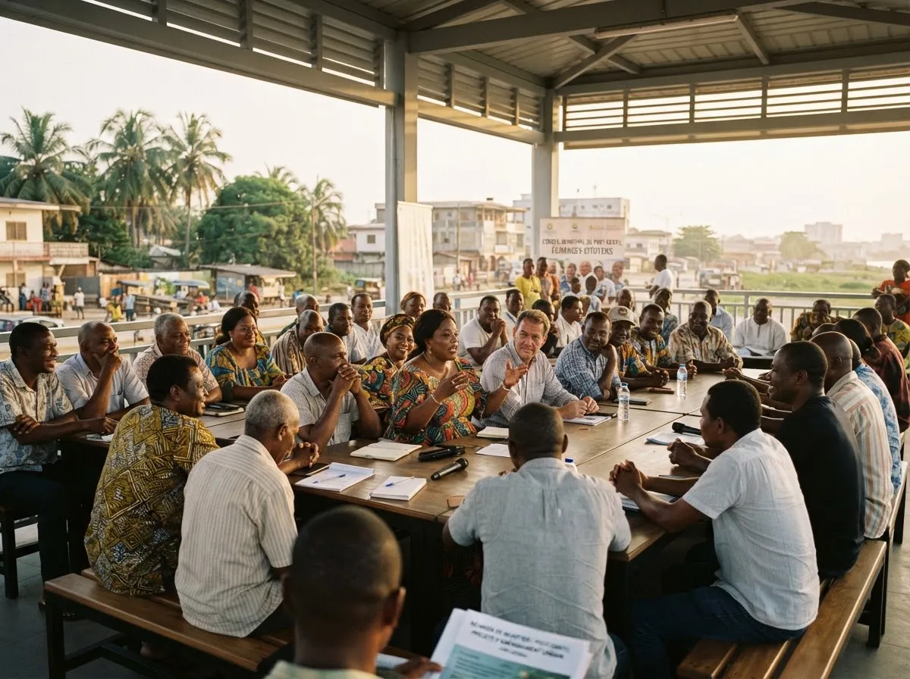

La Mairie de Port-Gentil
Élus, conseil municipal, directions : comprendre qui décide, qui agit et comment participer à la vie de votre commune.
Pascal Houangni Ambouroue
Maire de la Commune de Port-Gentil, il préside le Conseil municipal et dirige l'administration communale, avec ses adjoints et l'ensemble des agents municipaux.
Les adjoints au Maire
Chaque adjoint reçoit une délégation du Maire sur un domaine de l'action municipale.
L'assemblée des élus de la commune
Session ordinaire du Conseil municipal
- Décision modificative du budget 2026
- Programme d'assainissement des canaux
- Tarifs des marchés municipaux
Les directions opérationnelles
Cliquez sur une direction pour découvrir ses missions et la contacter.

Participer à la vie de ma commune
Les Comités de développement des quartiers (CDQ) relaient les besoins des habitants et proposent les projets du budget participatif.
Le Conseil consultatif citoyen donne son avis sur les grands projets de la commune.
Documents officiels
Délibérations, arrêtés, budgets et rapports d'activité, en libre accès.
Comment fonctionne votre Mairie ?
Les citoyens élisent
Les habitants élisent les conseillers municipaux lors des élections locales.
Le Conseil délibère
Le Conseil élit le Maire, vote le budget et les grandes décisions.
L'exécutif pilote
Le Maire et ses adjoints mettent en œuvre les décisions.
Les services agissent
Les directions municipales assurent le service public au quotidien.